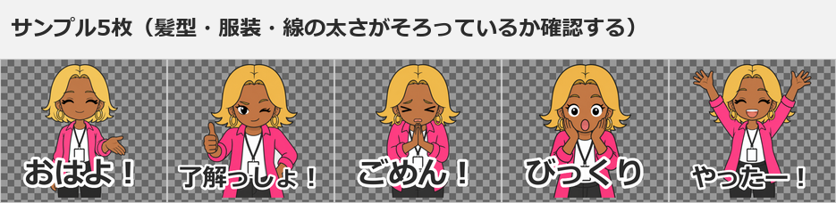
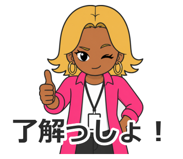

第8章 審査とリジェクト対応
この章でわかること
- 審査で見られている3つの観点
- リジェクトの典型例12種と、その原因・対策
- リジェクト通知の読み方
- 修正して再申請する手順
- リジェクト通知をAIに整理させるプロンプト
- 再申請前のチェックリスト
リジェクトは失敗ではありません
先に、いちばん大事なことを書きます。
リジェクトは失敗ではなく、修正指示です。
審査に落ちたのではありません。
「ここを直せば通ります」と教えてもらっている状態です。
私も、何度もリジェクトを受けています。
そして、そのほとんどは画像の仕様の問題でした。
絵の内容や企画がダメだと言われたことは、ほぼありません。
つまり、こういうことです。
- 直せる
- 直せば通る
- 直し方は通知に書いてある
落ち込む必要がない理由
リジェクトの通知には、該当する項目が書かれています。
そこを直して再申請すれば、また審査されます。
回数の制限で困った経験はありません。
それでも、リジェクトが1回減ると、それだけ販売開始が早くなります。
だから、この章では「事前に防ぐ方法」を中心に書きます。
審査で見られている3つの観点
おおまかに、次の3つです。
観点1 画像の仕様
- サイズ
- ファイル形式
- 透過
- 余白
- 枚数
ここが一番リジェクトの原因になります。
そして、ここは事前に100%チェックできます。
第11章の scripts/validate_images.py を実行してください。
観点2 権利
- 著作権
- 商標
- 肖像権
実在人物、既存キャラクター、企業ロゴ、ブランド名。
これらが含まれていないか。
観点3 内容
- 公序良俗
- 説明文との一致
- スタンプとして使えるか
差別的・攻撃的・性的な表現。
そして、「スタンプとして機能するか」も見られます。
リジェクトの典型例12種
私が経験したもの、そして仕組み上起きうるものを整理します。
典型例1 画像サイズの不備
症状
規定のピクセル数を超えている、または小さすぎる。
縦横が奇数のピクセル数になっている。
原因
- 生成画像をそのままアップロードした
- リサイズ時に縦横比を合わせようとして数値が奇数になった
- メイン画像とタブ画像のサイズを間違えた
対策
validate_images.pyで全枚数を事前チェックする- 縦横のピクセル数が偶数か確認する
- サイズの規定値は、LINE Creators Market公式ガイドラインで確認する
典型例2 透過ミス
症状
背景が白いまま、または半透明の残りがある。
輪郭に白いフチが残っている。
原因
- 白で塗りつぶして「透過した」と思っていた
- 自動の背景削除で、細部が残った
- PNG保存時に透過設定がオフだった
対策
- 黒いレイヤーを下に置いて確認する（第6章）
validate_images.pyでRGBA（透過情報）の有無を確認する- 選択範囲を1px内側に縮めてから削除する
これは見た目では気づけません。必ず黒背景で確認してください。
典型例3 余白不足
症状
キャラクターが画像の端に接触している。
手や足が画面外で切れている。
原因
- 生成時に「余白を残す」指定をしなかった
- 文字を大きくしすぎて端まで届いた
対策
- 全体を90〜95%に縮小して中央配置する
- 生成プロンプトの【構図】に「周囲に均等な余白を残す」と書く
- 余白の推奨値は、公式ガイドラインで確認する
典型例4 文字が切れている
症状
セリフの一部が画像の外に出ている。
濁点や小さい文字が欠けている。
原因
- 文字を大きくしすぎた
- 文字入れ後に余白確認をしなかった
- 2行にしたときに下の行がはみ出した
対策
- 文字入れ後に、必ず全体を見る
- 文字も余白の内側に収める
- 縮小表示で確認する
典型例5 類似画像が多い
症状
「同じような画像が複数ある」と指摘される。
原因
- ポーズがほぼ同じ画像を複数入れた
- 表情の差が小さい
- 文字だけを変えて、絵は同じものを使い回した
対策
- 表情バリエーション10種を明確に分ける（第3章の表）
- ポーズを部位ごとに指定する（第5章）
- 40枚を並べて、似ているペアを探す
チェック方法
40枚を1つの画面に並べます。
そして、文字を隠して見ます。
絵だけで違いがわかるか。
わからないペアがあれば、片方を作り直します。
典型例6 著作権
症状
既存の作品に似ている、と指摘される。
原因
- 画像生成のプロンプトに作品名・作家名を入れた
- 「〇〇風」という指定をした
- 既存キャラクターの特徴（髪型、衣装、配色）が偶然一致した
対策
- プロンプトに作品名・作家名を入れない
- 画風は技法で書く（太い線、ベタ塗り、影1段）
- 生成後に「何かを思い出さないか」自分で確認する
典型例7 商標
症状
ロゴ、ブランド名、企業名が含まれている。
原因
- ノートパソコンやスマートフォンにロゴが描かれた
- 服のプリントに文字やマークが入った
- 看板や商品パッケージが描かれた
対策
- 小物は「無地・ロゴなし」と毎回指定する
- 「画像内に文字を一切描かない」と明記する
- 生成後に、小物を拡大して確認する
典型例8 肖像権
症状
実在の人物に似ている、と指摘される。
原因
- プロンプトに実在人物の名前を入れた
- 写真をもとに生成した
- 特徴的な髪型・服装が特定の人物を想起させた
対策
- 実在人物の名前を絶対に入れない
- 他人の写真を使わない
- 生成後に「誰かを思い出さないか」確認する
自分や家族の写真を使う場合も、本人の同意が必要です。
典型例9 公序良俗
症状
不適切な内容が含まれている、と指摘される。
原因
- セリフに攻撃的・差別的な表現が入っていた
- 過度な露出があった
- 危険な行為を想起させる表現があった
- 賭博を想起させる表現があった
対策
- 第4章の「避けるべき表現」を確認する
- 迷ったセリフは入れない
- 40個のうち1個を諦めるだけで、リジェクトを1回減らせる
典型例10 説明文との不一致
症状
説明文の内容と、スタンプの中身が合っていない。
原因
- 説明文に、実際には入っていない用途を書いた
- タグを内容と関係なく設定した
- タイトルに無関係なキーワードを入れた
対策
- 説明文は、実際に入っているセリフの範囲だけを書く
- タグは内容に合うものだけ選ぶ
- タイトルに無関係な検索ワードを入れない
典型例11 国や地域による販売制限
症状
特定の地域で販売できない、と案内される。
原因
- 地域によって受け取り方が異なる表現が含まれていた
- 文化・宗教・政治に触れる要素があった
対策
- 判断に迷う表現は入れない
- 販売地域の設定を確認する
- 地域ごとのルールは公式ガイドラインを確認する
典型例12 スタンプとして使いにくい画像
症状
「スタンプとして適切でない」と指摘される。
原因
- 文字だけで絵がない
- 絵が小さすぎて何かわからない
- トークで送る場面が想像できない
- 全体が薄い色で、背景に溶ける
対策
- キャラクターを大きく描く
- 色を濃くする
- 「いつ、誰に送るか」が言えるスタンプにする（第4章）
リジェクト通知の読み方
通知には、該当する項目が書かれています。
読むときの手順
- どの項目が指摘されているかを特定する - 画像の仕様か、権利か、内容か
- 対象のファイル番号が書かれているか確認する - 番号がある場合は、その画像だけを直す - 番号がない場合は、全枚数を確認する
- 指摘の種類を分類する - 「必ず直すもの」と「確認が必要なもの」に分ける
- 修正の順番を決める - 全枚数に関わるものから直す
番号が書かれていない場合
これがいちばん困る状況です。
そのときは、この順番で確認してください。
validate_images.pyを実行する（仕様の問題を全部洗い出す）- 40枚を並べて、似ているペアを探す
- 小物を拡大して、文字やロゴがないか確認する
- セリフ40個を読み返して、表現を確認する
- 説明文と中身が一致しているか確認する
1番だけで解決することが多いです。
修正して再申請する手順
手順
- 管理画面で、対象のアイテムを開く
- 編集できる状態にする
- 指摘された箇所を修正する - 画像の場合：修正した画像を差し替える - テキストの場合：タイトル・説明文を書き換える - 設定の場合：タグ・販売地域・写真使用の申告を修正する
- 修正後、
validate_images.pyを再実行する - プレビューで確認する
- スマートフォンで実サイズを確認する
- 再申請する
画像を差し替えるときの注意
ファイル名を変えないでください。
stamp_012.png を直したなら、同じ stamp_012.png として差し替えます。
名前を変えると、順番が崩れます。
修正記録を残す
これは私が後から効いた習慣です。
【リジェクト記録】
日付：
指摘された項目：
対象ファイル：
原因（自分の分析）：
行った修正：
再申請日：
結果：
次回への学び：
これを残しておくと、2作目で同じ失敗をしません。
templates/production_checklist.md にも欄を用意しています。
そのまま使えるプロンプト
プロンプト1 リジェクト通知を整理する
これがこの章のメインのプロンプトです。
あなたはLINEスタンプ制作の経験者で、審査対応を支援する立場です。
以下は、LINE Creators Marketから届いた審査結果の通知です。
この内容を整理して、修正方針をまとめてください。
【審査結果の通知（原文）】
（ここに届いた通知をそのまま貼る）
【私の制作物の情報】
- スタンプ枚数：
- 画像の作り方：（例：画像生成AIでイラストを作成、文字は後から追加）
- キャラクター：（例：架空のAI活用コンサルタント「アイナ」）
- 使ったツール：
- 説明文：
- タグ：
- 販売地域：
【出力してほしいこと】
1. 指摘の要点
- 通知に書かれている指摘を、箇条書きで整理する
- 通知に書かれていないことを推測で追加しない
2. 指摘の分類
- 「画像の仕様」「権利」「内容」「設定・テキスト」のどれか
- 対象ファイルが特定できるか、全枚数の確認が必要かを明記する
3. 修正箇所の特定手順
- 何を、どの順番で確認すればよいか
- 確認に使えるツールや方法（黒背景での透過確認など）
4. 具体的な修正作業
- 作業内容を1ステップずつ書く
- 画像編集ソフトでの操作として書く
5. 再申請前チェックリスト
- チェックボックス形式（- [ ]）
- 今回の指摘に関係する項目を先頭に置く
6. 次回以降の予防策
- 同じ指摘を受けないための工程上の対策
【重要な制約】
- LINEの規約条文を推測して引用しないでください
- 通知に書かれていない基準や数値を創作しないでください
- 画像サイズなどの具体的な数値は
「LINE Creators Market公式ガイドラインで要確認」と書いてください
- 「これで必ず通る」といった断定をしないでください
プロンプト2 指摘が曖昧なときの絞り込み
LINE Creators Marketの審査で、以下の指摘を受けました。
しかし、対象のファイル番号が書かれていません。
【指摘内容】
（貼る）
【私の状況】
- 枚数：
- 画像の作り方：
- 気になっている点：
【出力してほしいこと】
1. この指摘で考えられる原因を、可能性が高い順に5つ
2. 各原因について、確認する具体的な方法
3. 40枚全部を確認する場合の、効率的な手順
4. 自動チェックできる項目と、目で見るしかない項目の切り分け
【制約】
- 通知に書かれていない基準を推測しないでください
- 確認方法は、無料ツールでできる範囲で書いてください
プロンプト3 類似画像の指摘に対応する
「類似した画像が複数ある」という指摘を受けました。
以下は、40枚のスタンプのセリフ・表情・ポーズの一覧です。
【一覧】
（stamp_list.csv の内容を貼る）
【出力してほしいこと】
1. 表情とポーズの組み合わせが似ているペアを、すべて挙げる
2. 各ペアについて、どちらを残すべきか（理由付き）
3. 残さない側を作り直す場合の、新しい表情・ポーズの案
4. 40枚全体で表情のバリエーションが足りているかの評価
【判定の基準】
- 「文字を隠したときに、絵だけで違いがわかるか」で判定する
- 表情の差が小さいものは類似とみなす
- 手の位置だけが違うものは類似とみなす
プロンプト4 セリフの表現を見直す
「内容が不適切」という指摘を受けた可能性があります。
以下のセリフ40個を確認し、審査で問題になりうる表現を洗い出してください。
【セリフ40個】
（貼る）
【チェック観点】
- 差別的・侮辱的に読める表現
- 攻撃的な表現
- 性的な表現
- 危険な行為を想起させる表現
- 賭博を想起させる表現
- 実在人物・団体・商標・ブランド名
- 医療・健康・法律について断定している表現
- 宗教・政治に関する主張
- 特定の地域や文化で受け取り方が変わる表現
【出力形式】
No / セリフ / 懸念点 / 言い換え案 / 削除を推奨するか
【制約】
- 規約の条文を推測して引用しないでください
- 「これは絶対に問題ない」という断定をしないでください
- 最終判断は公式ガイドラインを確認する前提で書いてください
実例：私が受けたリジェクトと対応
具体的な指摘の文面は公開できませんが、対応の考え方を共有します。
事例1 透過の不備で全枚数を差し替えた
自動の背景削除を使ったあと、確認せずに申請しました。
指摘を受けて、黒背景で確認したところ、輪郭に白いフチが残っていました。
対応
- 全枚数を黒背景で確認
- フチが残っている画像を特定
- 選択範囲を1px内側に縮めて削除し直す
- 再度、黒背景で確認
validate_images.pyを実行- 再申請
学び
加工の最後に、必ず黒背景で全枚数を確認する。
この1工程を工程表に入れました。以降、透過での指摘はなくなりました。
事例2 小物の文字が読めない文字列になっていた
パソコンの画面に、意味不明な文字列が生成されていました。
自分では気づかず、拡大して初めて見つけました。
対応
- 該当画像を特定
- 生成プロンプトに「画面には何も表示しない」を追加
- 再生成
- 差し替えて再申請
学び
小物は必ず拡大して確認する。
そして、生成プロンプトに「文字を描かない」を固定で入れるようにしました。
事例3 説明文と中身がずれていた
説明文に、実際には入っていない用途を書いていました。
対応
- セリフ40個を読み返す
- 実際にカバーしている範囲を書き出す
- 説明文をその範囲に書き換える
- 再申請
学び
説明文は、セリフ40個を見ながら書く。
先に説明文を書くと、盛ってしまいます。
よくある失敗
失敗1 リジェクトで作品を放棄する
修正指示なので、直せば通ります。
対策：通知を読んで、1つずつ直す。
失敗2 通知を読まずに何度も再申請する
同じ理由で返ってきます。
対策：指摘項目を特定してから直す。
失敗3 自己判断で「これは大丈夫」と決める
対策：迷った要素は削る。1個削って再申請が早い。
失敗4 1枚だけ直して再申請する
同じ問題が他の39枚にもあることが多いです。
対策：全枚数を確認する。validate_images.py を使う。
失敗5 差し替え時にファイル名を変える
順番が崩れます。
対策：同じファイル名で差し替える。
失敗6 修正後に検証を再実行しない
別の問題を作り込むことがあります。
対策：修正後も必ず validate_images.py を実行する。
失敗7 修正記録を残さない
2作目で同じ失敗をします。
対策：リジェクト記録の欄を埋める。
失敗8 AIに「規約ではこうなっている」と言わせる
AIは規約を正確に持っていません。推測が混ざります。
対策：プロンプトに「規約を推測しない」制約を入れる。数値は公式で確認する。
この章のチェックリスト
申請前の予防（これが本番）
validate_images.pyを実行して全項目OKだった- 黒背景で全枚数の透過を確認した
- キャラクターが端に接触していない
- 文字が切れていない
- 40枚を並べ、文字を隠して絵だけで違いがわかった
- 小物を拡大して、文字・ロゴがないことを確認した
- 実在人物・既存キャラクターを想起しないか確認した
- セリフ40個の表現を見直した
- 説明文が、実際のセリフの範囲と一致している
- タグが内容に合っている
- 公式ガイドラインで画像仕様を確認した
リジェクトを受けたとき
- 通知を最後まで読んだ
- 指摘項目を分類した（仕様／権利／内容／設定）
- 対象ファイルを特定した（できない場合は全枚数確認）
- AIで修正方針を整理した
- 修正した
- 全枚数を再確認した
validate_images.pyを再実行した- プレビューで確認した
- スマートフォンで確認した
- 修正記録を残した
- 再申請した
章のまとめ
- リジェクトは失敗ではなく修正指示。直せば通る
- 原因のほとんどは画像の仕様。事前に100%チェックできる
- 透過は見た目でわからない。黒背景で全枚数確認する
- 類似画像は「文字を隠して絵だけで見る」で判定する
- 小物の文字とロゴは、拡大して確認する
- 説明文は、セリフ40個を見ながら書く
- 通知に書かれていないことを推測しない。数値は公式で確認する
- 修正記録を残すと、2作目で同じ失敗をしない
次の章では、販売と宣伝に進みます。
作っただけでは、誰も存在を知りません。

